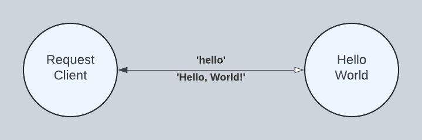

Preface
Like some of you, I programmed sequentially for years, using the occasional thread here and there. I mostly enjoyed the performance gains as processors became faster and faster. Then, processors stopped becoming faster. Instead, processors started becoming more parallel by adding more cores. I became painfully aware that my programming style was not the future. Moreover, programming applications imperatively with shared state, critical sections, and semaphores had been declared an abject failure. I needed to learn a new programming model.
A colleague introduced me to an early version of Scala. Programming in Scala opened my eyes to a new world of concurrent actors, monads, and multi-paradigm programming. I worked hard and became confident in this new environment, but the applications I produced were suspect. Instead of forming a business solution, my programs formed a concurrency solution. Although I liked the sophistication of this new environment, the results just felt wrong. Writing application code, especially for business applications, should be easy, and the results should express the solution clearly without requiring special knowledge.
While battling the concurrent programming experience, other trends affected my opinions around concurrent programming, such as cloud computing, IT and OT convergence, low-code development, and software composition using web services. Along the way, I studied "Concepts, Techniques, and Models in Computer Programming," paying particular attention to a programming model named Declarative Dataflow that greatly simplified concurrent programming. Declarative dataflow introduced a new construct named the dataflow variable, making concurrent programming extremely simple. I began imagining how this dataflow construct could streamline and accelerate the development of modern cloud applications, low-code platforms, and software composition.
In my first experiment with declarative dataflow, I created a dynamic programming language named Ozy that ran as a companion language on the JVM. The experiment was especially fruitful as it exposed a weakness in declarative dataflow--dataflow variables cannot be easily shared with other programming languages--and motivated a novel solution.
In 2020, I found myself locked down because of COVID-19, staring at a blank screen with an epiphany for a new programming language. The central idea was an actor construct fusing the message-passing protocol with a hidden implementation of declarative dataflow. Unlike typical actor systems, programs would not be formed as state machines, and unlike declarative dataflow, programs would interoperate without knowing dataflow variables. The name Torq came to me as I imagined a programming language with the power to service millions of requests incrementally and fairly, moving massive amounts of data without stalling.
Torq is the culmination of a personal journey to realize a new programming experience. It consists of a language and a patented programming model named Actorflow. The language is dynamic with optional type annotations, and although interpreted, Torq can be faster than compiled languages by utilizing multiple processors more efficiently. The Actorflow model gives Torq encapsulation power, where actor messages are the inputs and outputs of a hidden dataflow machine.
This book presents Torq by example, where each example builds on previous examples. I hope you enjoy it.
--Glenn Osborne
Introduction
Welcome to the Torq Programming Language for Java developers.
Big Data analytics, artificial intelligence, and IT/OT convergence are pressuring organizations to be data-centric. The urgent need to manage explosive data growth with meaning, where billions of files and records are distributed over thousands of computers, is a significant challenge.
Torq addresses these challenges by simplifying data-centric programming at scale with a novel programming model. This allows programmers to focus on the application problem rather than the programming problem, leading to efficiencies that lower costs.
The Torq programming model is designed to improve scalability, responsiveness, and faster time-to-market in three problem areas:
- Data contextualization - enhancing live data meaningfully before it is stored
- Enterprise convergence - creating meaningful APIs across departments and divisions
- Situational applications - composing low-cost, low-code, highly-valued applications quickly
- Data contextualization
- Modern data fuels analytics and artificial intelligence. To make data specifically meaningful, it needs preprocessing, contextualization, and additional features before reaching storage. Torq enhances existing dataflows efficiently with related data to help reveal insights that would otherwise go unseen.
- Enterprise convergence
- Enterprise workflows require applications spanning multiple departments and divisions. Initiatives, such as the "Unified Name Space," aim to tear down traditional silos. Torq provides a dynamic platform to unify the enterprise with composable services that integrate departments and divisions.
- Situational applications
- Recent advancements have enabled solutions that were out of reach only a few years ago, creating a massive demand for new solutions. Low-code platforms help citizen developers reduce software backlogs. Torq is a truly low-code platform that scale and execute efficiently.
Concurrent programming is hard, really hard
What makes concurrent programming so hard that it would justify a new programming language like Torq?
Mainstream programming suffers an incurable problem: variables alone cannot refer to shared memory values from multiple threads. Shared memory values require multiple threads to explicitly synchronize access, and as Lee (2006) formalized, programming over shared memory with threads is a failure. To solve this problem, the industry has adopted models other than shared memory for concurrency, such as message passing, functional programming, and borrow checking. In each of these models, programming is highly structured to avoid shared memory and unsafe access. Unfortunately, these models tend to create complex and tangled code. In the degenerative case, they organize code into concurrency solutions instead of application solutions.
A programming model does exist where multiple threads can share memory without explicit synchronization. Borrowed from logic programming, Declarative Dataflow (Van-Roy, P., & Haridi, S., 2004) computes over single-assignment variables called dataflow variables. A dataflow variable is initially unbound, but once bound, it is immutable. Threads that produce information bind dataflow variables, and threads that consume information suspend until dataflow variables are bound. This dataflow rule describes a producer-consumer interaction that implicitly synchronizes access to shared memory, resulting in a natural style void of technical concerns unrelated to the problem. Unfortunately, adopting declarative dataflow is highly disruptive because it requires runtime architectures to redefine the fundamental semantics of the memory variable for all processes.
Actorflow
Torq is a new programming language based on Actorflow, a patented programming model that fuses message-passing actors with a hidden implementation of declarative dataflow. Concurrently executing actors only communicate by sending immutable messages. Requests and responses are correlated with private dataflow variables, bound indirectly by a controller. Actors that send requests may suspend, waiting for a variable bound by a response. Actors that receive messages may resume when a received message binds a waiting variable. This request-response interaction provides synchronization without sharing variables, giving us a naturally sequential programming style. Moreover, we can compose programs using a mix of libraries from other programming languages. All variables, dataflow or otherwise, are hidden.
Consider the following program written as a Torq actor. ConcurrentMath calculates the number 7 using three concurrent child actors to supply the operands in the expression 1 + 2 * 3. This example is an unsafe race condition in mainstream languages. However, in Torq, this sequential-looking but concurrently executing code will always calculate 7 because of the dataflow rule defined previously. Notice that Torq honors operator precedence without explicit synchronization.
actor ConcurrentMath() in
actor Number(n) in
handle ask 'get' in
n
end
end
var n1 = spawn(Number.cfg(1)),
n2 = spawn(Number.cfg(2)),
n3 = spawn(Number.cfg(3))
handle ask 'calculate' in
n1.ask('get') + n2.ask('get') * n3.ask('get')
end
end
Concurrent Construction
Torq facilitates a concurrent style of programming not possible in mainstream languages. Consider the next example as a slightly modified version of our previous example. Instead of calculating concurrently, we construct concurrently. The concurrent math calculation x + y * z from our first example is replaced with a concurrent data construction [x, y, z].
For clarity, we substitute the expressions
n1.ask('get'),n2.ask('get'), andn3.ask('get')with the symbolsx,y, andz, respectively.
actor ConcurrentMathTuple() in
actor Number(n) in
handle ask 'get' in
n
end
end
var n1 = spawn(Number.cfg(1)),
n2 = spawn(Number.cfg(2)),
n3 = spawn(Number.cfg(3))
handle ask 'calculate' in
[n1.ask('get'), n2.ask('get'), n3.ask('get')]
end
end
Dataflow variables make concurrent construction possible. Instead of using futures (functions and callbacks), like other programming languages, Torq uses dataflow variables to construct partial data that is complete when concurrent tasks are complete. In essence, futures wait for logic, but Torq waits for data.
The implicit synchronization provided by dataflow variables is not the same as the syntactic sugar provided by async-await for futures (sometimes called promises). In essence, Torq is non-blocking-concurrent whereas async-await is non-blocking-sequential. For example, a Torq API server may run a single request over multiple hardware threads simultaneously, whereas an API server written with async-await will not.
The Torq effect is more than just a natural programming style. The implicit synchronization afforded by dataflow variables can increase concurrency by reducing synchronization barriers. Consider the following comparison of a simple use-case written in Torq and then Java.
TODO: Insert a Torq vs Java example. Compare a simple use-case written in Torq and Java that retrieves a customer order, product, and contact history.
TODO: Insert a streaming example that exploits fewer synchronization barriers
Getting started
In this chapter, we provide the following sections:
- Installation - how to install Java and Torq
- Hello, World! - how to write and run your first Torq program
Installation
Install Java
Torq for Java requires JDK 17+. Use your favorite JDK provider or one of the following:
- AWS: https://aws.amazon.com/corretto/
- Microsoft: https://learn.microsoft.com/en-us/java/openjdk/download
Install Torq JARs
Torq consists of four core JARs, one optional server JAR, and one examples JAR. The core jars are 100% Java with no external dependencies. The server JAR provides dynamic API support and depends on Jetty 12. The examples JAR depends on all the other JARs.
Core JARs
<dependency>
<groupId>org.torqlang</groupId>
<artifactId>torqlang-local</artifactId>
<version>1.0-SNAPSHOT</version>
</dependency>
<dependency>
<groupId>org.torqlang</groupId>
<artifactId>torqlang-lang</artifactId>
<version>1.0-SNAPSHOT</version>
</dependency>
<dependency>
<groupId>org.torqlang</groupId>
<artifactId>torqlang-klvm</artifactId>
<version>1.0-SNAPSHOT</version>
</dependency>
<dependency>
<groupId>org.torqlang</groupId>
<artifactId>torqlang-util</artifactId>
<version>1.0-SNAPSHOT</version>
</dependency>
Server JAR
<dependency>
<groupId>org.torqlang</groupId>
<artifactId>torqlang-server</artifactId>
<version>1.0-SNAPSHOT</version>
</dependency>
Examples JAR
<dependency>
<groupId>org.torqlang</groupId>
<artifactId>torqlang-examples</artifactId>
<version>1.0-SNAPSHOT</version>
</dependency>
Install Torq JARs using Maven
To use Maven, you need to:
- Configure your Maven settings file
settings.xml- Add a GitHub profile
- Add your GitHub identity and personal access token
- Configure your project POM file
pom.xml- Add the Torq GitHub repository
For detailed guidance, see GitHub, Learn more about Maven.
Configure settings.xml
Add a GitHub profile
Add a GitHub profile to your Maven settings. Replace OWNER with torq-lang and REPOSITORY with torq-jv.
<profile>
<id>github</id>
<repositories>
<repository>
<id>central</id>
<url>https://repo1.maven.org/maven2</url>
</repository>
<repository>
<id>github</id>
<url>https://maven.pkg.github.com/OWNER/REPOSITORY</url>
<snapshots>
<enabled>true</enabled>
</snapshots>
</repository>
</repositories>
</profile>
Add your GitHub identity and personal access token
Add a GitHub server to your list of servers. Replace USERNAME with your GitHub user ID and replace TOKEN with your
GitHub personal access token.
<servers>
<server>
<id>github</id>
<username>USERNAME</username>
<password>TOKEN</password>
</server>
</servers>
Configure pom.xml
Your POM file must contain two declarations:
- A repository declaration
- A dependency for each Torq JAR being used
<project>
<!-- Declare the GitHub repository for Torq -->
<repositories>
<repository>
<id>github</id>
<url>https://maven.pkg.github.com/torq-lang/torq-jv</url>
</repository>
</repositories>
<!-- Declare a dependency for each Torq JAR used -->
<dependencies>
<dependency>
<groupId>org.torqlang</groupId>
<artifactId>torqlang-server</artifactId>
<version>1.0-SNAPSHOT</version>
</dependency>
<dependency>
<groupId>org.torqlang</groupId>
<artifactId>torqlang-local</artifactId>
<version>1.0-SNAPSHOT</version>
</dependency>
<dependency>
<groupId>org.torqlang</groupId>
<artifactId>torqlang-lang</artifactId>
<version>1.0-SNAPSHOT</version>
</dependency>
<dependency>
<groupId>org.torqlang</groupId>
<artifactId>torqlang-util</artifactId>
<version>1.0-SNAPSHOT</version>
</dependency>
<dependency>
<groupId>org.torqlang</groupId>
<artifactId>torqlang-klvm</artifactId>
<version>1.0-SNAPSHOT</version>
</dependency>
<dependency>
<groupId>org.torqlang</groupId>
<artifactId>torqlang-examples</artifactId>
<version>1.0-SNAPSHOT</version>
</dependency>
</dependencies>
</project>
Hello, World!
In this section, we learn how to create and run simple Torq programs.
HelloWorld
The fundamental unit of concurrency in Torq is the actor. In our diagram below, RequestClient and HelloWorld are actors that run concurrently with the potential to run in parallel. RequestClient sends a 'hello' message to HelloWorld, and in response, HelloWorld sends a 'Hello, World!' message to RequestClient. Note the sold line arrow. The labels are read clockwise, so that we say 'hello' is sent from RequestClient to HelloWorld and 'Hello, World!' is sent from HelloWorld to RequestClient. The open arrow points toward the recipient of the request and the closed arrow points toward the recipient of the response, the terminus of our interaction.

Programming HelloWorld
HelloWorld is defined beginning with the actor keyword. Following the actor keyword is the name HelloWorld. An actor can accept parameters that affect how it is configured. In our case, there are no parameters. Next, the actor requires that a body be defined between enclosing in and end keywords. The HelloWorld actor contains just one statement in its body, an ask handler, specified as handle ask 'hello' in ... end.
actor HelloWorld() in
handle ask 'hello' in
'Hello, World!'
end
end
Our ask handler is programmed to receive 'hello' messages one at a time. If additional 'hello' messages are received while one is being processed, they are queued until HelloWorld is ready to receive another. Like our actor, our ask handler requires that a body be defined between enclosing in and end keywords. Our ask handler contains a single expression in its body, the 'Hello, World!' string literal. By convention, an ask handler returns the last expression as its result.
Running HelloWorld
Torq is a dynamic language run on the JVM. In this section, we place our source into a Java String literal. With our source code in hand, we build and execute our program from Java using a fluent builder tool.
public static final String SOURCE = """
actor HelloWorld() in
handle ask 'hello' in
'Hello, World!'
end
end""";
public static void perform() throws Exception {
// Build and spawn HelloWorld. After spawning, HelloWorld is waiting to
// receive the 'hello' message. The spawn method returns an actorRef used
// subsequently to send it messages.
ActorRef actorRef = Actor.builder()
.spawn(SOURCE);
// Send the 'hello' message to the actor reference returned above. Wait a
// maximum of 100 milliseconds for a response.
Object response = RequestClient.builder()
.sendAndAwaitResponse(actorRef, Str.of("hello"), 100, TimeUnit.MILLISECONDS);
checkExpectedResponse(Str.of("Hello, World!"), response);
}
Click org.torqlang.examples.HelloWorld.java to see the full source code on GitHub.
HelloWorldWithGoodbye
In our HelloWorldWithGoodbye diagram, we extend HelloWorld with a 'goodbye' handler. We use two instances of RequestClient to send two different requests to just one instance of HellWorldWithGoodbye. This demonstrates a long-running actor servicing different requests from multiple clients.

Programming HelloWorldWithGoodbye
actor HelloWorld() in
handle ask 'hello' in
'Hello, World!'
end
handle ask 'goodbye' in
'Goodbye, World!'
end
end
Running HelloWorldWithGoodbye
public static final String SOURCE = """
actor HelloWorld() in
handle ask 'hello' in
'Hello, World!'
end
handle ask 'goodbye' in
'Goodbye, World!'
end
end""";
public static void perform() throws Exception {
// Build and spawn HelloWorld. After spawning, HelloWorld is waiting to
// receive the 'hello' or 'goodbye' message. The spawn method returns an
// actorRef used subsequently to send it messages.
ActorRef actorRef = Actor.builder()
.spawn(SOURCE);
// Send the first message -- 'hello'
Object response = RequestClient.builder()
.sendAndAwaitResponse(actorRef, Str.of("hello"), 100, TimeUnit.MILLISECONDS);
checkExpectedResponse(Str.of("Hello, World!"), response);
// Send the second message -- 'goodbye'
response = RequestClient.builder()
.sendAndAwaitResponse(actorRef, Str.of("goodbye"), 100, TimeUnit.MILLISECONDS);
checkExpectedResponse(Str.of("Goodbye, World!"), response);
}
Summary
In this section, we learned:
- How to program concurrent actors
- How to run an actor program from Java
- How to use a concurrent actor to service multiple requests
Data Types
- Values
- Numbers
- Dec
- Flt
- Int
- Literals
- Bool
- Null
- Str
- Token
- Numbers
- Records
- Syntax
- Labels
- Features
- Selecting using
. - Selecting using
[] - Feature order
- Syntax
Functions
Factorial

Programming Factorial
actor Factorial() in
func fact(x) in
func fact_cps(n, k) in
if n < 2 then k
else fact_cps(n - 1, n * k) end
end
fact_cps(x, 1)
end
handle ask x in
fact(x)
end
end
Running Factorial
public static final String SOURCE = """
actor Factorial() in
func fact(x) in
func fact_cps(n, k) in
if n < 2 then k
else fact_cps(n - 1, n * k) end
end
fact_cps(x, 1)
end
handle ask x in
fact(x)
end
end""";
public static void perform() throws Exception {
ActorRef actorRef = Actor.builder()
.spawn(SOURCE);
Object response = RequestClient.builder()
.sendAndAwaitResponse(actorRef, Int64.of(10), 100, TimeUnit.MILLISECONDS);
checkExpectedResponse(Int64.of(3628800), response);
}
Child Actors
ConcurrentMath
Programming ConcurrentMath
actor ConcurrentMath() in
actor Number(n) in
handle ask 'get' in
n
end
end
var n1 = spawn(Number.cfg(1)),
n2 = spawn(Number.cfg(2)),
n3 = spawn(Number.cfg(3))
handle ask 'calculate' in
n1.ask('get') + n2.ask('get') * n3.ask('get')
end
end
Running ConcurrentMath
public static final String SOURCE = """
actor ConcurrentMath() in
actor Number(n) in
handle ask 'get' in
n
end
end
var n1 = spawn(Number.cfg(1)),
n2 = spawn(Number.cfg(2)),
n3 = spawn(Number.cfg(3))
handle ask 'calculate' in
n1.ask('get') + n2.ask('get') * n3.ask('get')
end
end""";
public static void perform() throws Exception {
ActorRef actorRef = Actor.builder()
.spawn(SOURCE);
Object response = RequestClient.builder()
.sendAndAwaitResponse(actorRef, Str.of("calculate"),
100, TimeUnit.MILLISECONDS);
checkExpectedResponse(Int32.of(7), response);
}
ConcurrentMath with increment
Programming ConcurrentMath with increment
actor ConcurrentMath() in
import system.Cell
actor Number(n) in
var value = Cell.new(n)
handle ask 'get' in
@value
end
handle tell 'incr' in
value := @value + 1
end
end
var n1 = spawn(Number.cfg(0)),
n2 = spawn(Number.cfg(0)),
n3 = spawn(Number.cfg(0))
handle ask 'calculate' in
n1.tell('incr')
n2.tell('incr'); n2.tell('incr')
n3.tell('incr'); n3.tell('incr'); n3.tell('incr')
n1.ask('get') + n2.ask('get') * n3.ask('get')
end
end
Running ConcurrentMath with increment
public static final String SOURCE = """
actor ConcurrentMath() in
import system.Cell
actor Number(n) in
var value = Cell.new(n)
handle ask 'get' in
@value
end
handle tell 'incr' in
value := @value + 1
end
end
var n1 = spawn(Number.cfg(0)),
n2 = spawn(Number.cfg(0)),
n3 = spawn(Number.cfg(0))
handle ask 'calculate' in
n1.tell('incr')
n2.tell('incr'); n2.tell('incr')
n3.tell('incr'); n3.tell('incr'); n3.tell('incr')
n1.ask('get') + n2.ask('get') * n3.ask('get')
end
end""";
public static void perform() throws Exception {
ActorRef actorRef = Actor.builder()
.spawn(SOURCE);
// 1 + 2 * 3
Object response = RequestClient.builder().sendAndAwaitResponse(actorRef,
Str.of("calculate"), 100, TimeUnit.MILLISECONDS);
checkExpectedResponse(Int32.of(7), response);
// 2 + 4 * 6
response = RequestClient.builder().sendAndAwaitResponse(actorRef,
Str.of("calculate"), 100, TimeUnit.MILLISECONDS);
checkExpectedResponse(Int32.of(26), response);
// 3 + 6 * 9
response = RequestClient.builder().sendAndAwaitResponse(actorRef,
Str.of("calculate"), 100, TimeUnit.MILLISECONDS);
checkExpectedResponse(Int32.of(57), response);
}
Error Handling
Error Messages
- Reference standard JSON schema for error handling
- Align Torq error messages with JSON standard
- Document the techniques for return standard error messages
Failed Values
- Explain and demonstrate how
FailedValues work - Explain how
FailedValueis mapped to standard JSON errors
Native Actors
In this chapter, we provide the following sections:
- Northwind Database - how to implement the Northwind database using native actors
- Native Performance - a performance evaluation of the Northwind database design
Northwind Database
In this section, we implement the Northwind database as a through-cache server using a directory as a backing storage. The goal is to create a realistic, self-contained data source that not only serves as an example of using native actors but can also be used in follow-on examples and benchmarking.
Read-Through Caching
A read-through cache acts as an intermediary between an application and a database. When an application reads from the cache, the cache checks if the data is already in memory. If the data is there, the cache returns it directly to the application. If the data is not in memory, the cache loads it from the database, stores it in memory, and then returns it to the application.
Write-Through Caching
A write-through cache acts as an intermediary between an application and a database. When an application writes to the cache, the cache writes the data to memory first and then immediately writes that cached data through to the database. Processing suspends until the data is successfully written to the database.
NorthwindDB
The Northwind database uses 4 native actors (A, B, C, and D), 1 shared memory cache (E), and one file system directory (F).

Native Performance
In this section, we evaluate the performance of our NorthwindDb actor design.
The ultimate goal in scalability is linear scalability, where doubling the number of cores doubles the amount of work your program completes per unit of time, perfect scalability. In practice, this is never achieved (research Amdahl's Law). Moreover, multicore processors can perform worse if applications ignore their effects on CPU caches.
To move our designs toward linear scalability, we must understand how CPUs work best and how to avoid problems created by using threads:
- Threads are heavyweight requiring lots of memory and CPU cycles
- Waiting threads are almost as expensive as active threads
- I/O reads and writes must wait somewhere without blocking threads
In this section we document how:
- Decreasing thread counts may increase throughput for CPU-bound actors
- Increasing thread counts may increase throughput for I/O-bound actors
Performance summary
Read-only NorthwindDb
| Readers | Simulated Latency | Millis per read | Throughput per second |
|---|---|---|---|
| 2 | 0 | 0.00044 | 2,257,829.57 |
Executors and Thread Pools
We use executors to partition our actors into CPU-bound or I/O-bound thread pools. CPU-bound actors do not block threads while waiting and need only a few threads to maintain throughput. I/O-bound actors, on the other hand, block threads while they wait for storage or network I/O to complete. As a consequence, they need more threads to maintain throughput.
The common practice for allocating a thread pool is to allocate n + 1 threads where n is the number of available hardware threads. Brian Goetz, one of the authors of "Java Concurrency in Practice," suggests a formula that uses more threads for I/O bound processes: thread_pool_size = available_hw_threads * target_utilization * (1 + wait_time / compute_time)
The formula above uses two variables to calculate the base allocation of threads for a thread pool available_hw_threads * target_utilization. Next, the formula calculates the ratio wait_time / compute_time and uses it to increase the resulting thread pool size. It increases the pool size dramatically if we are I/O-bound.
Consider a CPU-bound ratio of 1 I/O second for every 10 compute seconds, resulting in a one-tenth increase 1 / 10. Now, consider an I/O-bound ratio of 10 I/O seconds for every 1 compute second, resulting in a 10 times increase 10 / 1. If we have 32 hardware threads, but only want to utilize 25% of them per thread pool, we get:
- CPU-bound thread pool:
thread_pool_size = 32 * .25 * (1 + 1/10)=8.8or9if we round up - I/O-bound thread pool:
thread_pool_size = 32 * .25 * (1 + 10/1)=88
As we can see, this formula allocates far more threads for I/O bound actors. Our example used the simple ratios 1 / 10 and 10 / 1, respectively. In practice, actual pool sizes will vary as wait_time / compute_time varies.
CPU Executors
TODO: Discuss the AffinityExecutor used to produce
0.00044msNorthwindDbread times. Demonstrate how few threads produced higher throughput by reducing cache misses.
NOTE: The following cache misses are for 10 iterations. Replace these examples with single iterations.
With 3 total threads:
1,435,452,059 cache-misses:u
RunNorthwindDb
Total time: 1,439 millis
Total reads: 3,100,000
Millis per read: 0.00046
Reads per second: 2,154,273.80
With 32 total threads:
5,697,015,968 cache-misses:u
RunNorthwindDb
Total time: 4,997 millis
Total reads: 3,100,000
Millis per read: 0.00161
Reads per second: 620,372.22
I/O Executors
TODO: Insert an example that leverages more threads to reduce tail latency. Use
NorthwindDbreadLatencyInNanosparameter to simulate I/O read latency and its effect on concurrency.
Comparative Performance
The non-Torq numbers below are, in most instances, best-case numbers. See the underlying references for details. In particular, the DynamoDB numbers are server-side latency numbers that do not include connection and download overhead.
- 0.000000222ms (or 0.222 nanoseconds) -- 1 CPU cycle
- Calculated for a 4.5Ghz processor. Faster CPU clocks perform faster calculations.
- 0.000000667ms to 0.000000888ms (or 0.667 to 0.888 nanoseconds) -- read from L1 CPU cache
- Based on a 4.5Ghz processor.
- 0.00000222ms to 0.000002664ms (or 2.22 to 2.66 nanoseconds) -- read from L2 CPU cache
- Based on a 4.5Ghz processor.
- 0.00000666ms to 0.00001554 (or 6.66 to 15.54 nanoseconds) -- read from L3 CPU cache
- Based on a 4.5Ghz processor.
- 0.0000222ms to 0.0000333ms (or 22.2 to 33.3 nanoseconds) -- read from RAM
- Based on a 4.5Ghz processor.
- 0.00007ms (70 nanoseconds) -- read 1 Northwind customer from a list of 29 customers
- Based on a synchronous, blocking, straight-line Java process using a 4.5GHz processor. Demonstrates nothing is faster than a straight-line process. However, a straight-line process does not support thousands of concurrent users maintaining a database.
- 0.00044ms (440 nanoseconds) -- read 1 Northwind customer using NorthwindDb actor
- Performed asynchronously with 2 underlying
NorthwindReaderactors with affinity scheduling using a 4.5GHz processor. - 0.0172ms (or 17.2 microseconds) -- send 1,518 byte ethernet packet
- Based on a 1GbE and 5 microsecond switch latency. Where
network_latency = (packet_size_bits / bit_rate) + switch_delay. - 0.5ms to 1.0ms -- DynamoDB DAX (server-side latency)
- "Amazon DynamoDB Accelerator (DAX) is a fully managed, highly available caching service built for Amazon DynamoDB. DAX delivers up to a 10 times performance improvementfrom milliseconds to microseconds"
- 2.0ms -- Solid State Drive
- Micron 7450 NVMe -- "The Micron 7450 SSD addresses QoS needs with industry-leading, 99.9999% mixed-workload read latencies under 2 milliseconds (ms) while still delivering hundreds of thousands of IOPS."
- 5.0ms to 10.0ms -- DynamoDB (server-side latency)
- "For example, DynamoDB delivers consistent single-digit millisecond performance for a shopping cart use case, whether you've 10 or 100 million users."
References:
- https://faculty.cs.niu.edu/~berezin/463/Assns/clocks.html
- http://ithare.com/wp-content/uploads/part101_infographics_v08.png
- https://aws.amazon.com/dynamodbaccelerator/
- https://aws.amazon.com/blogs/database/understanding-amazon-dynamodb-latency/
- https://www.micron.com/about/blog/storage/ssd/micron-advanced-workload-demands
- https://www.youtube.com/watch?v=PLApcas04V0
- https://penberg.org/papers/tpc-ancs19.pdf
- https://github.com/OpenHFT/Java-Thread-Affinity
- https://scalac.io/blog/improving-akka-dispatchers/
{kind=link}
Evaluation output
Timings
RunNorthwindJava
RunNorthwindJava
Total time: 13 millis
Total reads: 200,000
Millis per read: 0.00007
Reads per second: 15,384,615.38
NorthwindDB
1 writer and 2 readers (taskset -c 0-2):
RunNorthwindDb
Total time: 1,373 millis
Total reads: 3,100,000
Millis per read: 0.00044
Reads per second: 2,257,829.57
Hardware used
Listing produced using lscpu:
Architecture: x86_64
CPU op-mode(s): 32-bit, 64-bit
Address sizes: 48 bits physical, 48 bits virtual
Byte Order: Little Endian
CPU(s): 32
On-line CPU(s) list: 0-31
Vendor ID: AuthenticAMD
Model name: AMD Ryzen 9 7950X 16-Core Processor
CPU family: 25
Model: 97
Thread(s) per core: 2
Core(s) per socket: 16
Socket(s): 1
Stepping: 2
CPU(s) scaling MHz: 25%
CPU max MHz: 5881.0000
CPU min MHz: 545.0000
Building an API Server
In this chapter, we provide the following sections:
- Northwind API - how to implement a Northwind API using Torq actors
- API Performance - a performance evaluation of the Northwind API design
Northwind API
API Performance
Benchmarking
- Build benchmarking uses cases for Northwind API
- Run benchmarking over the Northwind API uses cases
- Document the benchmarking results
Appendix
In the appendix, we provide the following references:
Appendix A: Basic Types
Appendix B: Grammar
Operators and Symbols
Priority
- 1 = Highest Priority
- 9 = Lowest Priority
| Operator | Description of Operator | Priority | Associativity |
|---|---|---|---|
@ | Get cell value | 1 | Right to left |
. | Select | 2 | Left to right |
[] | Select | 2 | Left to right |
() | Apply | 2 | Left to right |
! | Logical NOT | 3 | Right to left |
| Negate | 3 | Right to left |
% | Remainder | 4 | Left to right |
/ | Divide | 4 | Left to right |
* | Multiply | 4 | Left to right |
| Subtraction | 5 | Left to right |
+ | Addition | 5 | Left to right |
> | Greater than | 6 | Left to right |
< | Less than | 6 | Left to right |
>= | Greater than or equal | 6 | Left to right |
<= | Less than or equal | 6 | Left to right |
== | Equal to | 6 | Left to right |
!= | Not equal to | 6 | Left to right |
&& | Logical AND | 7 | Left to right |
|| | Logical OR | 8 | Left to right |
= | Assign value (unify) | 9 | Right to left |
:= | Set cell value | 9 | Right to left |
The partial arity symbol:
...-- partial arity
Keywords
actactoras(weak)ask(weak)beginbreakcasecatchcontinuedoelseelseifendeoffalsefinallyforfunchandle(weak)ifimportinlocalnullofprocreturnselfskipspawntell(weak)thenthrowtruetryvarwhenwhile
ANTLR BNF
grammar torqlang;
// Although this grammar may be used to create parsers, it was derived for
// documentation purposes from the hand-written Torqlang lexer and parser.
//******************//
// PARSER RULES //
//******************//
program: stmt_or_expr EOF;
stmt_or_expr: meta? assign ';'*;
meta: 'meta' '#' (meta_rec | meta_tuple);
meta_rec: '{' meta_field (',' meta_field)* '}';
meta_tuple: '[' meta_value (',' meta_value)* ']';
meta_field: STR_LITERAL ':' meta_value;
meta_value: meta_rec | meta_tuple | bool |
STR_LITERAL | INT_LITERAL;
assign: or ('=' or | ':=' or)?;
or: and ('||' and)*;
and: relational ('&&' relational)*;
relational: sum (relational_oper sum)*;
relational_oper: '<' | '>' | '==' | '!=' | '<=' | '>=';
sum: product (sum_oper product)*;
sum_oper: '+' | '-';
product: unary (product_oper unary)*;
product_oper: '*' | '/' | '%';
unary: select_or_apply | (negate_or_not unary)+;
negate_or_not: '-' | '!';
select_or_apply: access (('.' access) | ('[' stmt_or_expr ']') |
('(' arg_list? ')'))*;
access: '@' access | construct;
construct: keyword | ident | value;
keyword: act | actor | begin | 'break' | case | 'continue' |
for | func | group | if | import_ | local | proc |
throw | return | 'self' | 'skip' | spawn | try | var |
while;
act: 'act' stmt_or_expr+ 'end';
actor: 'actor' ident? '(' pat_list? ')' 'in'
(stmt_or_expr | message_handler)+ 'end';
message_handler: 'handle' (tell_handler | ask_handler);
tell_handler: 'tell' pat ('when' stmt_or_expr)?
'in' stmt_or_expr+ 'end';
ask_handler: 'ask' pat ('when' stmt_or_expr)? return_type_anno?
'in' stmt_or_expr+ 'end';
begin: 'begin' stmt_or_expr+ 'end';
case: 'case' stmt_or_expr
('of' pat ('when' stmt_or_expr)? 'then' stmt_or_expr+)+
('else' stmt_or_expr+)? 'end';
for: 'for' pat 'in' stmt_or_expr 'do' stmt_or_expr+ 'end';
func: 'func' ident? '(' pat_list? ')' return_type_anno?
'in' stmt_or_expr+ 'end';
group: '(' stmt_or_expr+ ')';
if: 'if' stmt_or_expr 'then' stmt_or_expr+
('elseif' stmt_or_expr 'then' stmt_or_expr+)*
('else' stmt_or_expr+)? 'end';
// `import` is already an ANTLR4 keyword, therefore we create our keyword
// with a trailing underscore
import_: 'import' ident ('.' ident)* ('[' import_alias (',' import_alias)* ']')?;
import_alias: ident ('as' ident)?;
local: 'local' var_decl (',' var_decl)*
'in' stmt_or_expr+ 'end';
var_decl: pat ('=' stmt_or_expr)?;
proc: 'proc' ident? '(' pat_list? ')'
'in' stmt_or_expr+ 'end';
throw: 'throw' stmt_or_expr;
return: 'return' stmt_or_expr?;
spawn: 'spawn' '(' arg_list ')';
try: 'try' stmt_or_expr+ ('catch' pat 'then' stmt_or_expr+)*
('finally' stmt_or_expr+)? 'end';
var: 'var' var_decl (',' var_decl)*;
while: 'while' stmt_or_expr 'do' stmt_or_expr+ 'end';
arg_list: stmt_or_expr (',' stmt_or_expr)*;
pat_list: pat (',' pat)*;
pat: rec_pat | tuple_pat |
(label_pat ('#' (rec_pat | tuple_pat))?) |
INT_LITERAL | (ident var_type_anno?);
label_pat: ('~' ident) | bool | STR_LITERAL | 'eof' | 'null';
rec_pat: '{' (field_pat (',' field_pat)* (',' '...')?)? '}';
tuple_pat: '[' (pat (',' pat)* (',' '...')?)? ']';
field_pat: (feat_pat ':')? pat;
feat_pat: ('~' ident) | bool | INT_LITERAL | STR_LITERAL |
'eof' | 'null';
value: rec_value | tuple_value |
(label_value ('#' (rec_value | tuple_value))?) |
INT_LITERAL | CHAR_LITERAL | FLT_LITERAL | DEC_LITERAL;
label_value: ident | bool | STR_LITERAL | 'eof' | 'null';
rec_value: '{' (field_value (',' field_value)*)? '}';
tuple_value: '[' (value (',' pat)*)? ']';
field_value: (feat_value ':')? stmt_or_expr;
feat_value: ident | bool | INT_LITERAL | STR_LITERAL |
'eof' | 'null';
var_type_anno: '::' ident;
return_type_anno: '->' ident;
bool: 'true' | 'false';
ident: IDENT | 'ask' | 'tell';
//*****************//
// LEXER RULES //
//*****************//
IDENT: ((ALPHA | '_') (ALPHA_NUMERIC | '_')*) |
'`' (~('`' | '\\') | ESC_SEQ)+ '`';
CHAR_LITERAL: '&' (~'\\' | ESC_SEQ);
STR_LITERAL: STR_SINGLE_QUOTED | STR_DOUBLE_QUOTED;
STR_SINGLE_QUOTED: '\'' (~('\'' | '\\') | ESC_SEQ)* '\'';
STR_DOUBLE_QUOTED: '"' (~('"' | '\\') | ESC_SEQ)* '"';
INT_LITERAL: DIGIT+ [lL]? |
('0x' | '0X') HEX_DIGIT+ [lL]?;
FLT_LITERAL: DIGIT+ '.' DIGIT+
([eE] ('+' | '-')? DIGIT+)? [fFdD]?;
DEC_LITERAL: DIGIT+ ('.' DIGIT+)? [mM]?;
//
// Define lexical rules for comments and whitespace
//
LINE_COMMENT : '//' .*? '\r'? '\n' -> skip;
COMMENT : '/*' .*? '*/' -> skip;
WS: [ \r\n\t\f\b]+ -> skip;
//
// Define reusable lexical patterns
//
fragment ALPHA_NUMERIC: ALPHA | DIGIT;
fragment ALPHA: UPPER_CASE_ALPHA | LOWER_CASE_ALPHA;
fragment UPPER_CASE_ALPHA: [A-Z];
fragment LOWER_CASE_ALPHA: [a-z];
fragment DIGIT: [0-9];
fragment NZ_DIGIT: [1-9];
fragment HEX_DIGIT: (DIGIT | [a-f] | [A-F]);
fragment ESC_SEQ: '\\' ([rntfb'"`\\] |
'u' HEX_DIGIT HEX_DIGIT HEX_DIGIT HEX_DIGIT);
Linux Commands
This appendix contains linux commands used in this book.
List CPU
List CPU information. In this instance, we listed the CPU information for one of our workstations running an AMD Ryzen 9 CPU.
lscpu
Architecture: x86_64
CPU op-mode(s): 32-bit, 64-bit
Address sizes: 48 bits physical, 48 bits virtual
Byte Order: Little Endian
CPU(s): 32
On-line CPU(s) list: 0-31
Vendor ID: AuthenticAMD
Model name: AMD Ryzen 9 7950X 16-Core Processor
CPU family: 25
Model: 97
Thread(s) per core: 2
Core(s) per socket: 16
Socket(s): 1
Stepping: 2
CPU(s) scaling MHz: 25%
CPU max MHz: 5881.0000
CPU min MHz: 545.0000
Run on select CPU Cores
Run a Java program constrained to a select set of hardware threads. In this instance, we run RunNorthwindDb using cores 0, 1, and 2.
taskset -c 0-2 java -XX:+UseZGC -p ~/workspace/torq_jv_runtime -m org.torqlang.examples/org.torqlang.examples.RunNorthwindDb
Display runtime stats
Show cache misses:
perf stat -e cache-misses COMMAND
Show cache misses while running RunNorthwindDb using 3 cores:
perf stat -e cache-misses taskset -c 0-2 java -XX:+UseZGC -p ~/workspace/torq_jv_runtime -m org.torqlang.examples/org.torqlang.examples.RunNorthwindDb
References
Bravo, M., Li, Z., Van Roy, P., & Meiklejohn, C. (2014, September). Derflow: distributed deterministic dataflow programming for Erlang. In Proceedings of the Thirteenth ACM SIGPLAN workshop on Erlang (pp. 51-60).
Crichton, W., Gray, G., & Krishnamurthi, S. (2023). A Grounded Conceptual Model for Ownership Types in Rust. arXiv preprint arXiv:2309.04134.
Doeraene, S., & Van Roy, P. (2013, July). A new concurrency model for Scala based on a declarative dataflow core. In Proceedings of the 4th Workshop on Scala (pp. 1-10).
Hewitt, C. (2010). Actor model of computation: scalable robust information systems. arXiv preprint arXiv:1008.1459.
Kunicki, Jacek (2019). How (Not) to use reactive Streams in Java 9+. https://www.youtube.com/watch?v=zf_0ydYb3JQ.
Lee, E. A. (2006). The problem with threads. Computer, 39(5), 33-42.
Leger, P., Fukuda, H., & Figueroa, I. (2021). Continuations and Aspects to Tame Callback Hell on the Web. Journal of Universal Computer Science, 27(9), 955-978.
Thompson, C. (2023). How Rust went from a side project to the worlds most-loved programming language. s Interneta, https://www.technologyreview.com/2023/02/14/1067869/rust-worlds-fastest-growing-programming-language, 14.
Van-Roy, P., & Haridi, S. (2004). Concepts, techniques, and models of computer programming. MIT press.
Van Roy, P., Haridi, S., Schulte, C., & Smolka, G. (2020). A history of the Oz multiparadigm language. Proceedings of the ACM on Programming Languages, 4(HOPL), 1-56.
Wadler, P. (1992, February). The essence of functional programming. In Proceedings of the 19th ACM SIGPLAN-SIGACT symposium on Principles of programming languages (pp. 1-14).